GPR Hyperbola Detection - No-Code Object Detection Workflow
← Kembali ke BerandaComputer Vision adalah cabang artificial intelligence yang memungkinkan komputer untuk "melihat" dan memahami konten visual seperti gambar dan video. Object Detection adalah task spesifik dalam computer vision yang bertujuan untuk:
1. Localization: Menemukan posisi objek dalam gambar (bounding box)
2. Classification: Mengidentifikasi jenis/kelas objek
3. Confidence: Memberikan skor kepercayaan untuk setiap deteksi
GPR adalah metode geofisika non-invasif yang menggunakan gelombang elektromagnetik untuk mencitrakan struktur bawah permukaan. Prinsip kerjanya:
Ketika GPR melewati objek buried (pipa, kabel, rongga, batuan), reflected signal membentuk pola hyperbola pada radargram. Karakteristik hyperbola mengandung informasi penting:
✗ Time-consuming untuk dataset besar (ratusan/ribuan profile)
✗ Subjektif - hasil bervariasi antar interpreter
✗ Sulit membedakan hyperbola dari noise/artifacts
✗ Tidak scalable untuk real-time monitoring
✓ Deteksi otomatis dan konsisten
✓ Cepat - ribuan images dalam hitungan menit
✓ Dapat belajar pattern kompleks dari data
✓ Scalable untuk monitoring continuous
Roboflow adalah platform end-to-end untuk computer vision yang memungkinkan workflow tanpa coding:
https://roboflow.com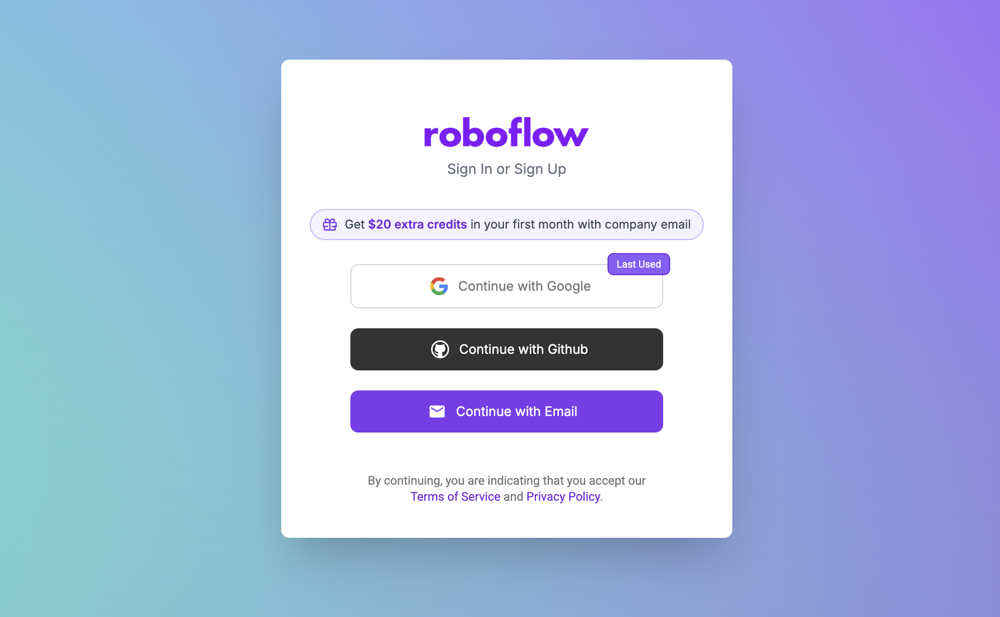
• Unlimited public projects
• 10,000 source images
• Roboflow Train access
• Hosted API deployment
• Community support
GPR atau gpr hyperbolahttps://universe.roboflow.com/gpr-uurq0/gpr-liosq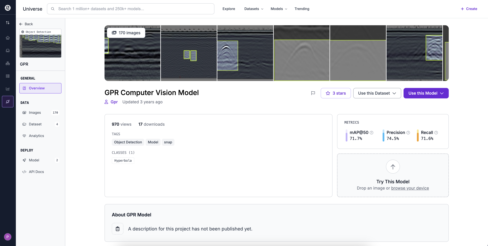
• Total images: [lihat di dataset page]
• Classes: Biasanya 1 class - "hyperbola"
• Format: Object detection (bounding boxes)
• Health score: Indicator kualitas annotations
GPR-Hyperbola-Detection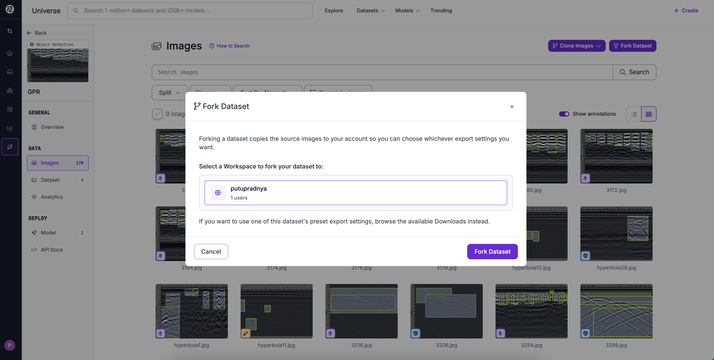
Jika tombol "Fork" tidak ada:
1. Download dataset (YOLO format recommended)
2. Create new project di workspace
3. Upload images + annotations manually
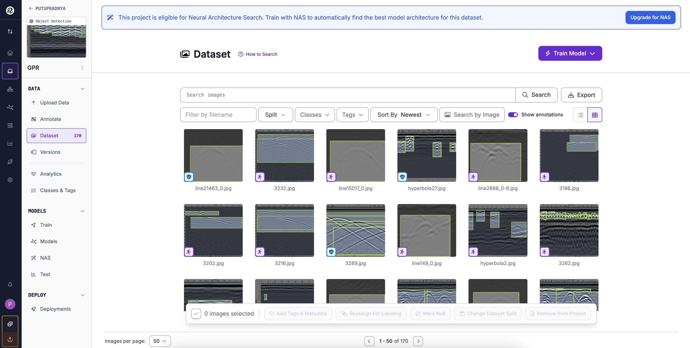
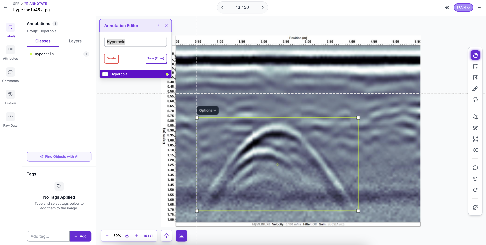
| Preprocessing | Setting | Alasan |
|---|---|---|
| Auto-Orient | ✅ ON | Fix image rotation berdasarkan EXIF metadata |
| Resize | ✅ 640 × 640 px | Standard input size untuk YOLO models (v11, v8, dll) |
| Resize Method | Stretch to Fit | Atau "Fit (letterbox)" untuk maintain aspect ratio |
| Grayscale | ❌ OFF | GPR sudah grayscale, tidak perlu konversi |
| Tile Images | ❌ OFF | Hanya untuk very large images (>2000px) |
| Contrast | ❌ OFF | Akan handle via augmentation |
Augmentation menciptakan variasi dari training images untuk improve model generalization. Klik tab "Augmentation" untuk configure.
| Augmentation | Setting | Alasan |
|---|---|---|
| Flip Horizontal | ✅ ON | Hyperbola bisa muncul dari arah manapun |
| Flip Vertical | ❌ OFF | Orientasi vertical penting (depth ke bawah) |
| Rotation | ✅ ±10° to ±15° | GPR profile bisa sedikit miring saat acquisition |
| Crop | ❌ OFF | Bisa potong hyperbola, tidak disarankan |
| Brightness | ✅ ±15% to ±20% | GPR intensity bisa bervariasi |
| Exposure | ✅ ±10% to ±15% | Variasi kondisi acquisition |
| Blur | ✅ Up to 1.5px | Simulate noise/low resolution data |
| Noise | ✅ Up to 2% pixels | Realistic GPR data often has noise |
| Cutout | ❌ OFF | Bisa hide hyperbola features |
| Mosaic | ❌ OFF | Tidak cocok untuk GPR spatial continuity |
Jika dataset KECIL (<100 images): Pilih 3x multiplier
Jika dataset MEDIUM (100-500 images): Pilih 2x multiplier
Jika dataset BESAR (>500 images): Pilih None atau 2x
Augmentation multiplier = berapa kali augmented version dibuat per original image
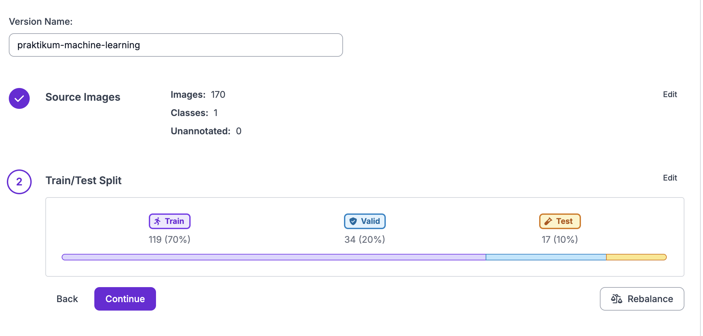
Setelah proses selesai, Anda akan memiliki:
• Version 1 (atau version berikutnya jika sudah ada versions sebelumnya)
• Preprocessing applied (resize, auto-orient)
• Augmentation applied (jika enabled)
• Train/Val/Test splits
• Ready untuk training!
Untuk praktikum ini: Pilih YOLOv11 dengan Model Size: Nano
• Nano: ringan dan cepat, cocok untuk dataset learning
• Successor YOLOv8 dengan inference lebih efisien
• Jika hasil kurang memuaskan, upgrade ke size Small atau Medium
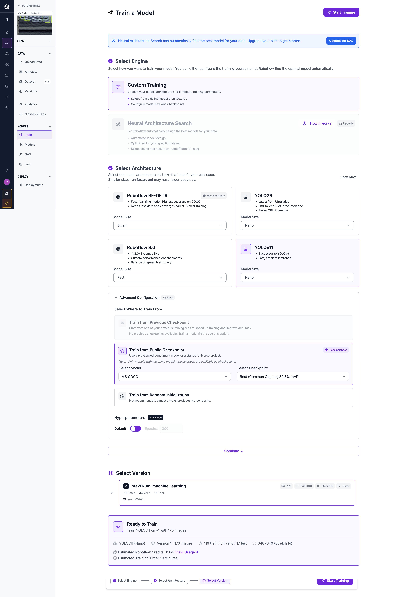
Small dataset (<100 images): ~5-10 menit
Medium dataset (100-500 images): ~10-20 menit
Large dataset (>500 images): ~20-40 menit
Note: Free plan menggunakan shared GPU, bisa ada waiting time
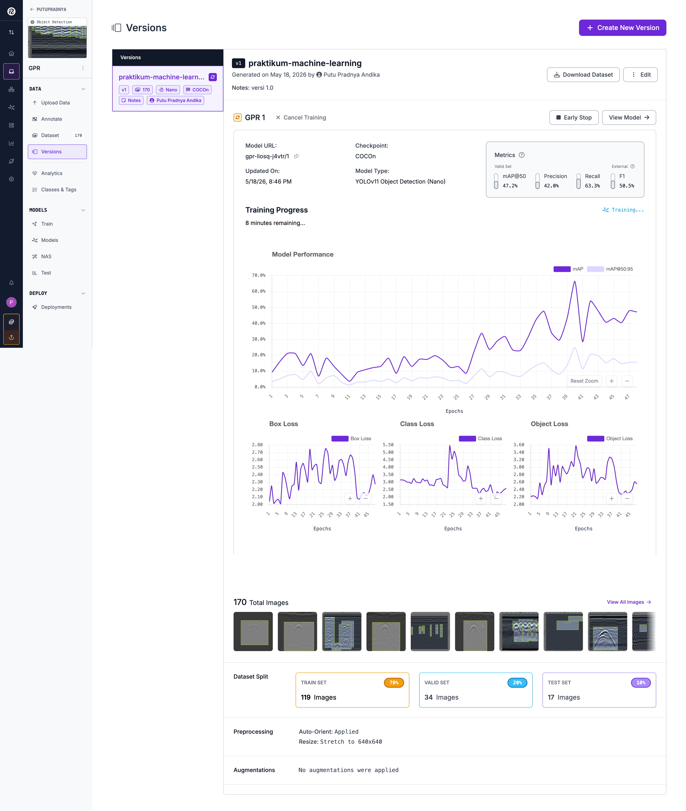
• Precision ~78%: Dari semua deteksi yang dibuat, 78% benar → false positive masih ada tapi terkontrol
• Recall ~68%: 68% dari semua hyperbola berhasil terdeteksi → ada ~32% yang masih terlewat
• mAP@0.5 ~68%: Performa solid untuk model Nano pada dataset GPR
• mAP@0.5:0.95 ~32%: Wajar untuk Nano — metric ini sangat strict (lokalisasi presisi)
• Loss curves train & val keduanya menurun konsisten → tidak ada overfitting signifikan
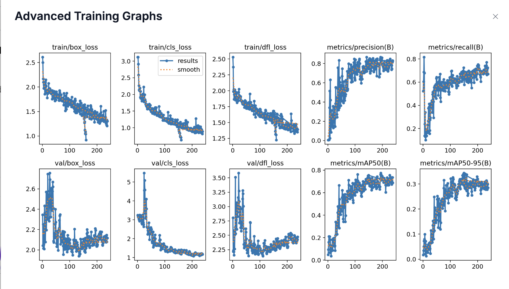
train/box_loss & val/box_loss
Error lokalisasi bounding box (posisi & ukuran). Turun dari ~2.6 → ~1.2 (train) dan stabil ~2.0 (val) → model makin akurat menempatkan box.
train/cls_loss & val/cls_loss
Error klasifikasi kelas objek. Turun dari ~3.0 → ~1.0 (train) dan ~5+ → ~1.1 (val) → model belajar membedakan hyperbola dari background.
train/dfl_loss & val/dfl_loss
Distribution Focal Loss — loss untuk presisi tepi bounding box (fitur baru YOLOv11). Turun dari ~2.5 → ~1.4 (train) dan stabil ~2.3 (val).
📈 Detection Metrics:
Precision = TP / (TP + FP) — dari semua deteksi yang dibuat model, berapa persen yang benar? High precision = sedikit false positives.
Recall = TP / (TP + FN) — dari semua hyperbola yang ada, berapa persen terdeteksi? High recall = sedikit hyperbola yang terlewat.
mAP@0.5 — mean Average Precision pada IoU threshold 50%. Metric utama object detection.
mAP@0.5:0.95 — rata-rata mAP dari IoU 50% sampai 95% (step 5%). Lebih strict, mengukur kualitas lokalisasi box.
Roboflow menggunakan sistem Workflows untuk deploy dan test model secara visual. Workflow mendefinisikan pipeline deteksi dari input image hingga output annotated.
gpr-liosq-j4vtr/1) → jalankan deteksidetection_visualization) → gambar bounding boxescount_objects) → hitung jumlah deteksiannotated_image) → tambah label teks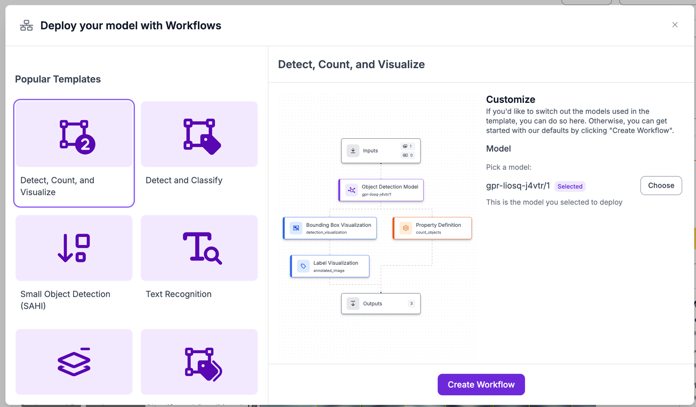
Inputs → Object Detection Model → Bounding Box Visualization + Property Definition → Label Visualization → Outputs
• Model node menjalankan YOLOv11 Nano pada setiap image yang masuk
• Visualization nodes menggambar hasil deteksi (bounding boxes + label) secara otomatis
• count_objects menghitung total hyperbola yang terdeteksi per image
• 3 outputs: annotated image, raw detections (JSON), jumlah objek
1. Buka workflow yang sudah dibuat
2. Klik "Try it" atau "Run" untuk upload test image
3. Drag & drop GPR image ke input node
4. Workflow otomatis memproses dan menampilkan annotated result
5. Review: bounding boxes hyperbola + jumlah deteksi per image
Setelah workflow berjalan, Roboflow menampilkan dua panel hasil: Visual (radargram dengan bounding box) dan Output (raw JSON detection data).
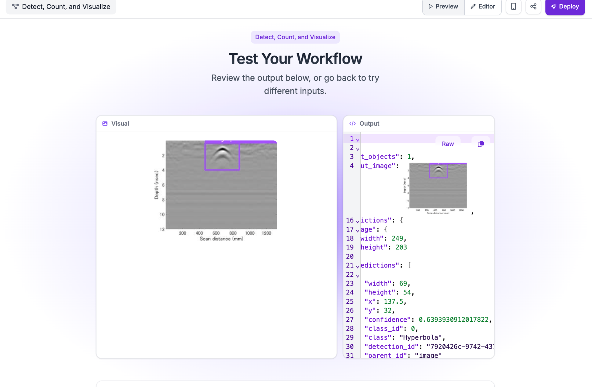
Visual panel: GPR radargram dengan 1 bounding box ungu menandai hyperbola di area shallow (~2–4 nsec)
Output JSON:
• 1 hyperbola terdeteksi dengan confidence 63.9%
• Bounding box: lebar 69px × tinggi 54px, center di (137.5, 32)
• Image size: 249 × 203 px
t_objects (count_objects) → jumlah total hyperbola yang terdeteksi
x, y → koordinat center bounding box (pixel)
width, height → ukuran bounding box (pixel)
confidence → skor keyakinan model (0–1), nilai 0.639 = 63.9%
class → nama kelas yang terdeteksi ("Hyperbola")
detection_id → ID unik setiap deteksi untuk tracking
Setelah model mendeteksi hyperbola, kita perlu extract informasi geofisika yang berguna dari bounding boxes.
Parameter: Y-coordinate dari bounding box center (apex hyperbola)
Konversi:
• Y-pixel → Two-way travel time (TWTT)
• TWTT → Depth menggunakan velocity
Formula:
Depth (m) = (Velocity × TWTT) / 2
Example:
Apex at y=200 pixels, time scale 0.5 ns/pixel, velocity 0.1 m/ns:
TWTT = 200 × 0.5 = 100 ns
Depth = (0.1 × 100) / 2 = 5 meters
Parameter: Width dari bounding box relatif terhadap depth
Konsep:
• Wide hyperbola → Low velocity material
• Narrow hyperbola → High velocity material
Relationship:
Velocity ∝ 1 / (Hyperbola Width)
Untuk precise velocity: perlu hyperbola fitting algorithm (diffraction curve matching)
Parameter: Amplitude dan width dari hyperbola
Interpretation:
• Large amplitude → Strong contrast (metal pipe, large void)
• Weak amplitude → Subtle contrast (soil boundary, small object)
• Horizontal width → Lateral extent of object
Scenario 1: Vertical alignment
Multiple hyperbolas di x-position sama tapi depth berbeda → Multiple interfaces/layers
Scenario 2: Horizontal pattern
Hyperbolas dengan spacing regular → Buried utility network (pipes, cables)
Scenario 3: Clustered detections
High density hyperbolas di area tertentu → Zone of interest (archaeological site, contaminated zone)
First iteration: Minimal augmentation (flip horizontal, brightness ±10%)
Evaluate results: If underfitting → add more augmentation
Second iteration: Add rotation ±15°, blur, noise
Avoid: Augmentations yang destroy GPR physics (vertical flip, extreme crops)
| Problem | Possible Cause | Solution |
|---|---|---|
| Low Precision (<70%) | Too many false positives - model detects noise as hyperbola | • Increase confidence threshold • Add more negative samples (images without hyperbolas) • Review annotation quality |
| Low Recall (<70%) | Missing many hyperbolas | • Decrease confidence threshold • Train for more epochs • Use larger model (Medium instead of Small) • Check if small hyperbolas are annotated |
| Overfitting (high train, low val) | Model memorizing training data | • Add more augmentation • Reduce training epochs • Increase dataset size • Use smaller model |
| Poor performance overall | Dataset quality issues | • Review annotations for errors • Ensure sufficient training data (>100 images) • Check image quality • Verify class balance |
| Training stuck/not converging | Learning rate or model architecture issue | • Try different model (YOLOv11 instead of v8) • Check for data loading errors • Contact Roboflow support if persists |
| Use Case | Recommended Model | Rationale |
|---|---|---|
| ✅ Praktikum ini | YOLOv11 Nano | Fast & efficient, cocok untuk learning & dataset kecil |
| Highest accuracy on COCO, sedikit data | Roboflow RF-DETR (Small) | Converges earlier, cocok kalau data terbatas |
| Balance speed & accuracy, production | Roboflow 3.0 (Fast) | YOLOv8-compatible dengan custom enhancements |
| Fastest CPU inference, edge device | YOLO26 (Nano) | NMS-free inference, faster on CPU |
| Small object detection (tiny hyperbolas) | YOLOv11 (Small/Medium) | Upgrade size jika Nano kurang akurat |
✓ Computer vision & object detection fundamentals
✓ Ground Penetrating Radar dan hyperbola detection
✓ Roboflow platform - end-to-end no-code workflow
✓ Dataset preprocessing & augmentation strategies
✓ YOLOv11 Nano model training & evaluation (~250 epochs)
✓ Deploy & inference via Roboflow Workflows (Detect, Count, and Visualize)
✓ Geophysical interpretation dari detection results